import numpy as np
import matplotlib.pyplot as plt
import pandas as pd
# Retina display
%config InlineBackend.figure_format = 'retina'
%matplotlib inline
from latexify import latexify, format_axes
FIG_WIDTH = 5
FIG_HEIGHT = 4Decision Trees [Real I/P Real O/P, Bias vs Variance]
ML
Tutorial
# Create dataset
x = np.array([1, 2, 3, 4, 5, 6])
y = np.array([0, 0, 1, 1, 2, 2])
# plot data
latexify(columns=2)
plt.scatter(x, y, color='k')
format_axes(plt.gca())
plt.savefig("../figures/decision-trees/ri-ro-dataset.pdf")
# Depth 0 tree
# Average of all y values
y_pred = np.mean(y)
# Plot data
latexify(columns=2)
plt.scatter(x, y, color='C1', label='data')
# Plot prediction
plt.plot([0, 7], [y_pred, y_pred], color='k', linestyle='-', label='Prediction')
format_axes(plt.gca())
plt.legend()
plt.savefig("../figures/decision-trees/ri-ro-depth-0.pdf")
from sklearn.tree import DecisionTreeRegressor
def create_DT_Regressor(x, y, depth, filename):
dt = DecisionTreeRegressor(max_depth=depth)
dt.fit(x.reshape(-1, 1), y)
# Plot data
latexify(columns=2)
plt.scatter(x, y, color='C1', label='Data')
x_test = np.linspace(0, 7, 500)
y_test = dt.predict(x_test.reshape(-1, 1))
plt.plot(x_test, y_test, color='k', label='Prediction')
format_axes(plt.gca())
plt.legend()
plt.savefig(f"../figures/decision-trees/{filename}.pdf")
return dt
dt_one = create_DT_Regressor(x, y, 1, "ri-ro-depth-1")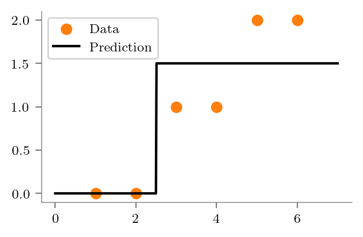
from sklearn.tree import export_graphviz
import graphviz
def create_graph(dt, filename, feature_names=['x']):
dot_data = export_graphviz(dt, out_file=None, feature_names=feature_names, filled=True)
graph = graphviz.Source(dot_data)
graph.format = 'pdf'
graph.render(f"../figures/decision-trees/{filename}")
return graphcreate_graph(dt_one, "ri-ro-depth-1-sklearn")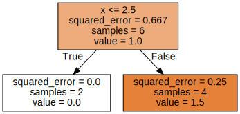
dt_two = create_DT_Regressor(x, y, 2, "ri-ro-depth-2")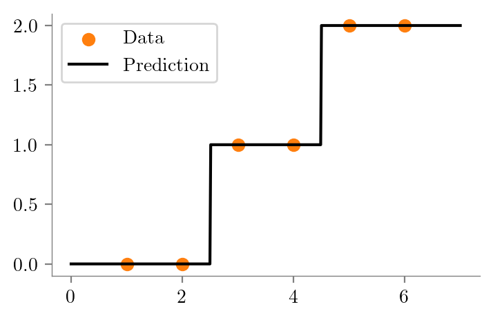
create_graph(dt_two, "ri-ro-depth-2-sklearn")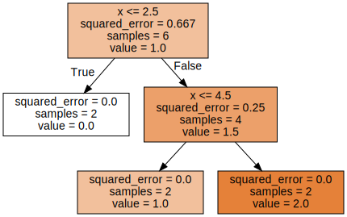
dt_three = create_DT_Regressor(x, y, 3, "ri-ro-depth-3")
create_graph(dt_three, "ri-ro-depth-3-sklearn")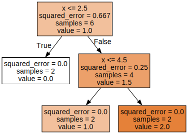
Sine Dataset
### Sine daatset
x = np.linspace(0, 2*np.pi, 200)
y = np.sin(x)
latexify(columns=2)
plt.scatter(x, y, color='k', s=1)
format_axes(plt.gca())
plt.savefig("../figures/decision-trees/sine-dataset.pdf")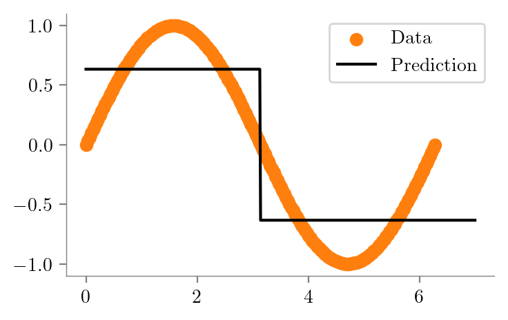
dt_sine_one = create_DT_Regressor(x, y, 1, "sine-depth-1")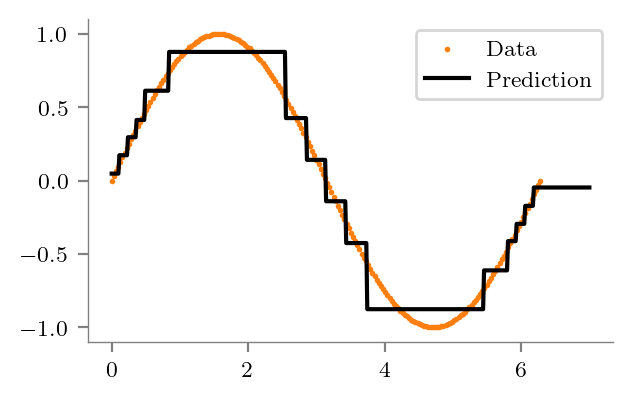
mean_y = np.mean(y)
error_vector = y - mean_y
squared_error = np.sum(error_vector**2)
mean_squared_error = squared_error / len(y)
print(f"Mean squared error: {mean_squared_error:0.4f}")Mean squared error: 0.4975create_graph(dt_sine_one, "sine-depth-1-sklearn")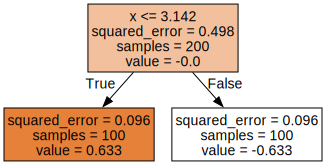
split = np.pi
left = y[x < split]
right = y[x >= split]
mean_left = np.mean(left)
mean_right = np.mean(right)
error_vector_left = left - mean_left
error_vector_right = right - mean_right
squared_error_left = np.sum(error_vector_left**2)
squared_error_right = np.sum(error_vector_right**2)
mean_squared_error_left = squared_error_left / len(left)
mean_squared_error_right = squared_error_right / len(right)
print(f"Mean squared error left: {mean_squared_error_left:0.4f}")
print(f"Mean value left: {mean_left:0.4f}")
print(f"Number of samples in left: {len(left)}")
print("---"*20)
print(f"Mean squared error right: {mean_squared_error_right:0.4f}")
print(f"Mean value right: {mean_right:0.4f}")
print(f"Number of samples in right: {len(right)}")
weighted_error = len(left) / len(y) * mean_squared_error_left + len(right) / len(y) * mean_squared_error_right
print("---"*20)
print(f"Weighted error: {weighted_error:0.4f}")
reduction = mean_squared_error - weighted_error
print(f"Reduction: {reduction:0.4f}")Mean squared error left: 0.0963
Mean value left: 0.6334
Number of samples in left: 100
------------------------------------------------------------
Mean squared error right: 0.0963
Mean value right: -0.6334
Number of samples in right: 100
------------------------------------------------------------
Weighted error: 0.0963
Reduction: 0.4012dt_sine_two = create_DT_Regressor(x, y, 2, "sine-depth-2")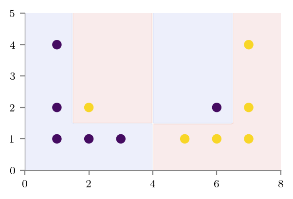
create_graph(dt_sine_two, "sine-depth-2-sklearn")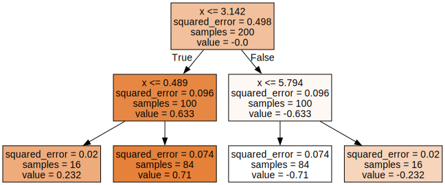
dt_sine_four = create_DT_Regressor(x, y, 4, "sine-depth-4")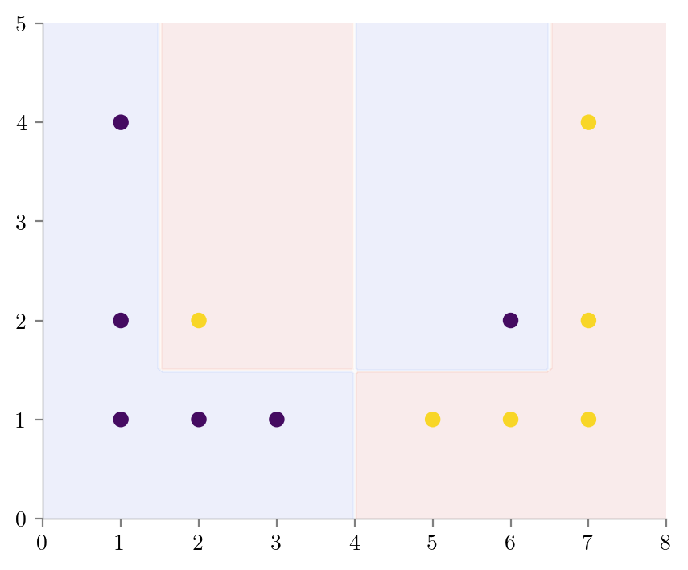
Bias-Variance Tradeoff - Dataset I
### Dataset for showing bias-variance tradeoff
X = np.array([[1, 1],[2, 1],[3, 1],[5, 1],
[6, 1],[7, 1],[1, 2],[2, 2],
[6, 2],[7, 2],[1, 4],[7, 4]])
y = np.array([0, 0, 0, 1, 1, 1, 0, 1, 0, 1 ,0, 1])
plt.scatter(X[:, 0], X[:, 1], c=y)
plt.xlabel("$x_1$")
plt.ylabel("$x_2$")
format_axes(plt.gca())
plt.savefig("../figures/decision-trees/bias-variance-dataset.pdf")
from sklearn.tree import DecisionTreeClassifier
def create_DT_Classifier(X,y,depth,filename):
dt = DecisionTreeClassifier(max_depth=depth)
dt.fit(X, y)
# Predict in entire 2d space and contour plot
x1 = np.linspace(0, 8, 100)
x2 = np.linspace(0, 5, 100)
X1, X2 = np.meshgrid(x1, x2)
X_test = np.stack([X1.flatten(), X2.flatten()], axis=1)
y_test = dt.predict(X_test)
plt.scatter(X[:, 0], X[:, 1], c=y)
plt.contourf(X1, X2, y_test.reshape(X1.shape), alpha=0.1, cmap='coolwarm')
format_axes(plt.gca())
plt.savefig(f"../figures/decision-trees/{filename}.pdf")
return dtdt_bias_variance_one = create_DT_Classifier(X, y, 1, "bias-variance-depth-1")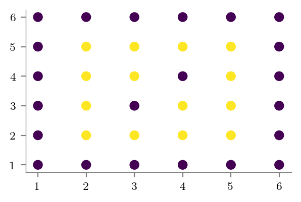
create_graph(dt_bias_variance_one, "bias-variance-depth-1-sklearn", feature_names=['x1', 'x2'])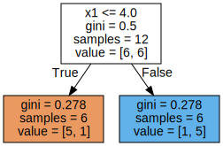
dt_bias_variance_full_depth = create_DT_Classifier(X, y, None, "bias-variance-full-depth")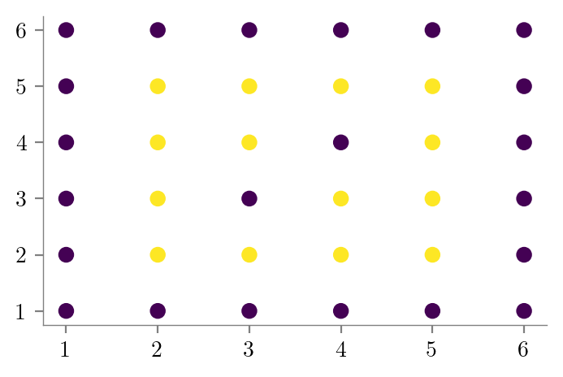
create_graph(dt_bias_variance_full_depth, "bias-variance-full-depth-sklearn", feature_names=['x1', 'x2'])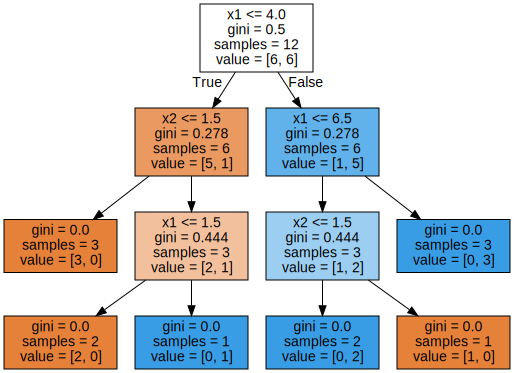
Bias-Variance Tradeoff - Dataset II
# Bias variance dataset 2
# X is all integers from (1, 1) to (6, 6)
X = np.array([[i, j] for i in range(1, 7) for j in range(1, 7)])
y = np.zeros(len(X), dtype=int)
y[(2 <= X[:, 0]) & (X[:, 0] <= 5) & (2 <= X[:, 1]) & (X[:, 1] <= 5)] = 1
plt.scatter(X[:, 0], X[:, 1], c=y)
special_condition = (X[:, 0] == 3) & (X[:, 1] == 3) | (X[:, 0] == 4) & (X[:, 1] == 4)
y[special_condition] = 0
plt.scatter(X[:, 0], X[:, 1], c=y)
format_axes(plt.gca())
plt.savefig("../figures/decision-trees/bias-variance-dataset-2.pdf")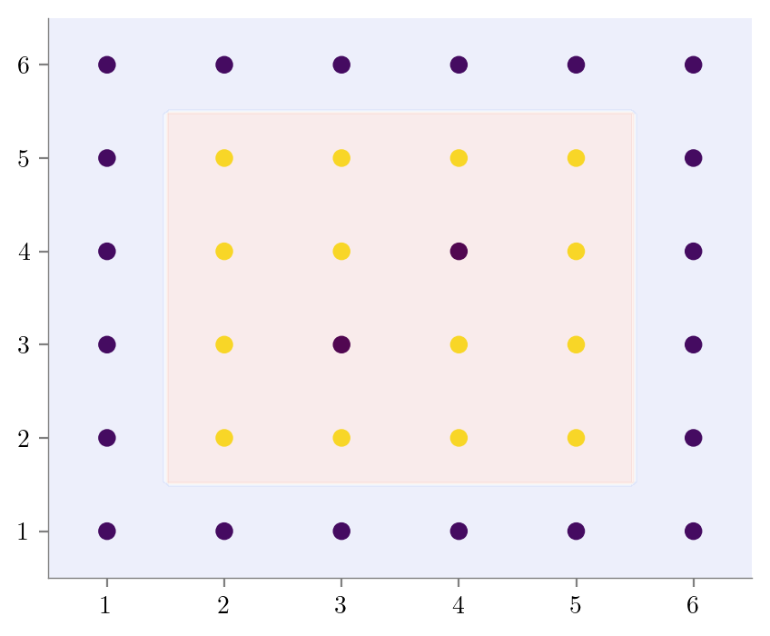
# X_test random uniform frmo (1, 1) to (6, 6) of size 1000
X_test = np.random.uniform(1, 6, size=(1000, 2))
y_test = np.zeros(len(X_test), dtype=int)
y_test[(2 <= X_test[:, 0]) & (X_test[:, 0] <= 5) & (2 <= X_test[:, 1]) & (X_test[:, 1] <= 5)] = 1
plt.scatter(X_test[:, 0], X_test[:, 1], c=y_test, alpha=0.1)
format_axes(plt.gca())
plt.savefig("../figures/decision-trees/bias-variance-dataset-2-test.pdf")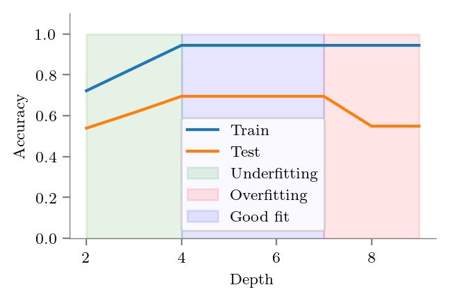
def create_DT_Classifier_with_graph(X,y,depth,filename):
dt = DecisionTreeClassifier(max_depth=depth)
dt.fit(X, y)
# Predict in entire 2d space and contour plot
x1 = np.linspace(0.5, 6.5, 100)
x2 = np.linspace(0.5, 6.5, 100)
X1, X2 = np.meshgrid(x1, x2)
X_contour = np.stack([X1.flatten(), X2.flatten()], axis=1)
y_contour = dt.predict(X_contour)
plt.scatter(X[:, 0], X[:, 1], c=y)
plt.contourf(X1, X2, y_contour.reshape(X1.shape), alpha=0.1, cmap='coolwarm')
format_axes(plt.gca())
plt.savefig(f"../figures/decision-trees/{filename}.pdf")
# Export tree
dot_data = export_graphviz(dt, out_file=None, feature_names=['x1', 'x2'], filled=True)
graph = graphviz.Source(dot_data)
graph.format = 'pdf'
graph.render(f"../figures/decision-trees/{filename}-sklearn")#Underfitting
create_DT_Classifier_with_graph(X, y, 2, "bias-variance-depth-2")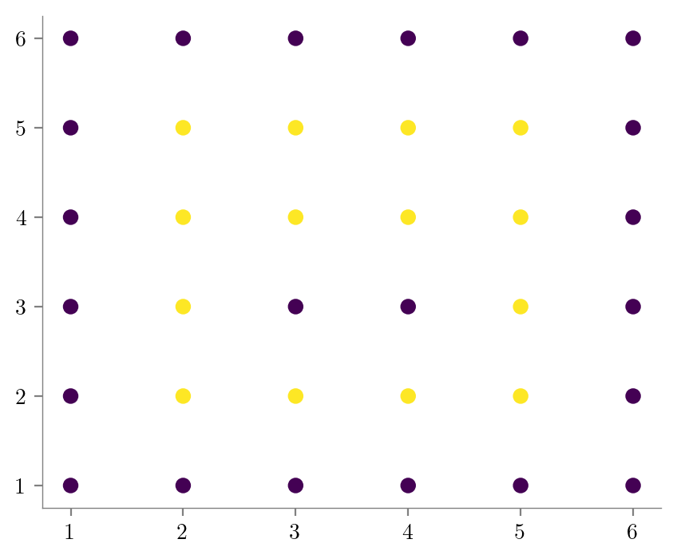
#Overfitting
create_DT_Classifier_with_graph(X, y, None, "bias-variance-full-depth")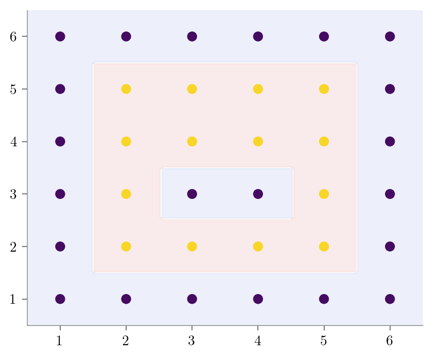
#Good Fit
create_DT_Classifier_with_graph(X, y, 4, "bias-variance-good-fit")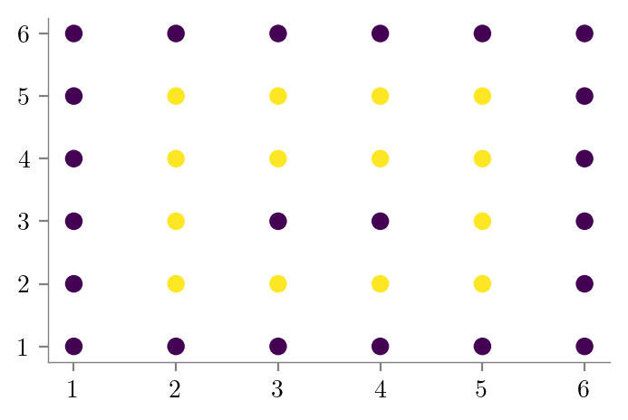
Test Accuracies
from sklearn.metrics import accuracy_score
### Train and test accuracy vs depth
depths = np.arange(2, 10)
train_accs = {}
test_accs = {}
for depth in depths:
dt = DecisionTreeClassifier(max_depth=depth)
dt.fit(X, y)
train_accs[depth] = accuracy_score(y, dt.predict(X))
test_accs[depth] = accuracy_score(y_test, dt.predict(X_test))train_accs = pd.Series(train_accs)
test_accs = pd.Series(test_accs)train_accs2 0.722222
3 0.833333
4 0.944444
5 0.944444
6 0.944444
7 0.944444
8 0.944444
9 0.944444
dtype: float64
ax = train_accs.plot(label='Train')
test_accs.plot(label='Test', ax=ax)
plt.xlabel("Depth")
plt.ylabel("Accuracy")
plt.legend()
plt.ylim(0, 1.1)
format_axes(plt.gca())
plt.savefig("../figures/decision-trees/bias-variance-accuracy-vs-depth.pdf")
# Highlight area of underfitting (depth < 4) fill with green
plt.fill_between(depths, 0, 1, where=depths <= 4, color='g', alpha=0.1, label='Underfitting')
plt.legend()
plt.savefig("../figures/decision-trees/bias-variance-accuracy-vs-depth-underfitting.pdf")
# Highlight area of overfitting (depth >7 4) fill with red
plt.fill_between(depths, 0, 1, where=depths >= 7, color='r', alpha=0.1, label='Overfitting')
plt.legend()
plt.savefig("../figures/decision-trees/bias-variance-accuracy-vs-depth-overfitting.pdf")
# Highlight good fit area (4 < depth < 7) fill with blue
plt.fill_between(depths, 0, 1, where=(depths >= 4) & (depths <= 7), color='b', alpha=0.1, label='Good fit')
plt.legend()
plt.savefig("../figures/decision-trees/bias-variance-accuracy-vs-depth-good-fit.pdf")
# Slight variation of the dataset leads to a completely different tree
y = np.zeros(len(X), dtype=int)
y[(2 <= X[:, 0]) & (X[:, 0] <= 5) & (2 <= X[:, 1]) & (X[:, 1] <= 5)] = 1
special_condition = (X[:, 0] == 3) & (X[:, 1] == 3) | (X[:, 0] == 4) & (X[:, 1] == 3)
y[special_condition] = 0
plt.scatter(X[:, 0], X[:, 1], c=y)
format_axes(plt.gca())
plt.savefig("../figures/decision-trees/bias-variance-dataset-2-2.pdf")
create_DT_Classifier_with_graph(X, y, None, "bias-variance-full-depth-2")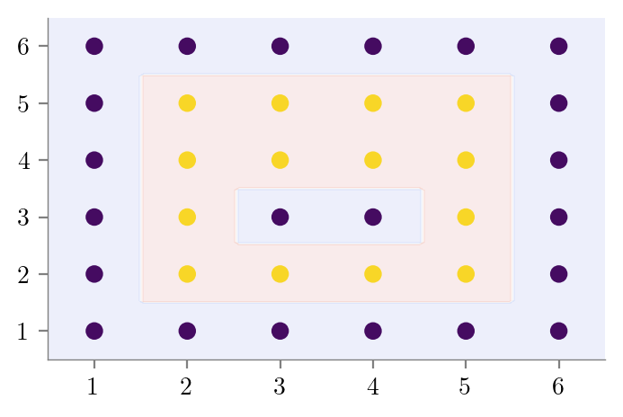